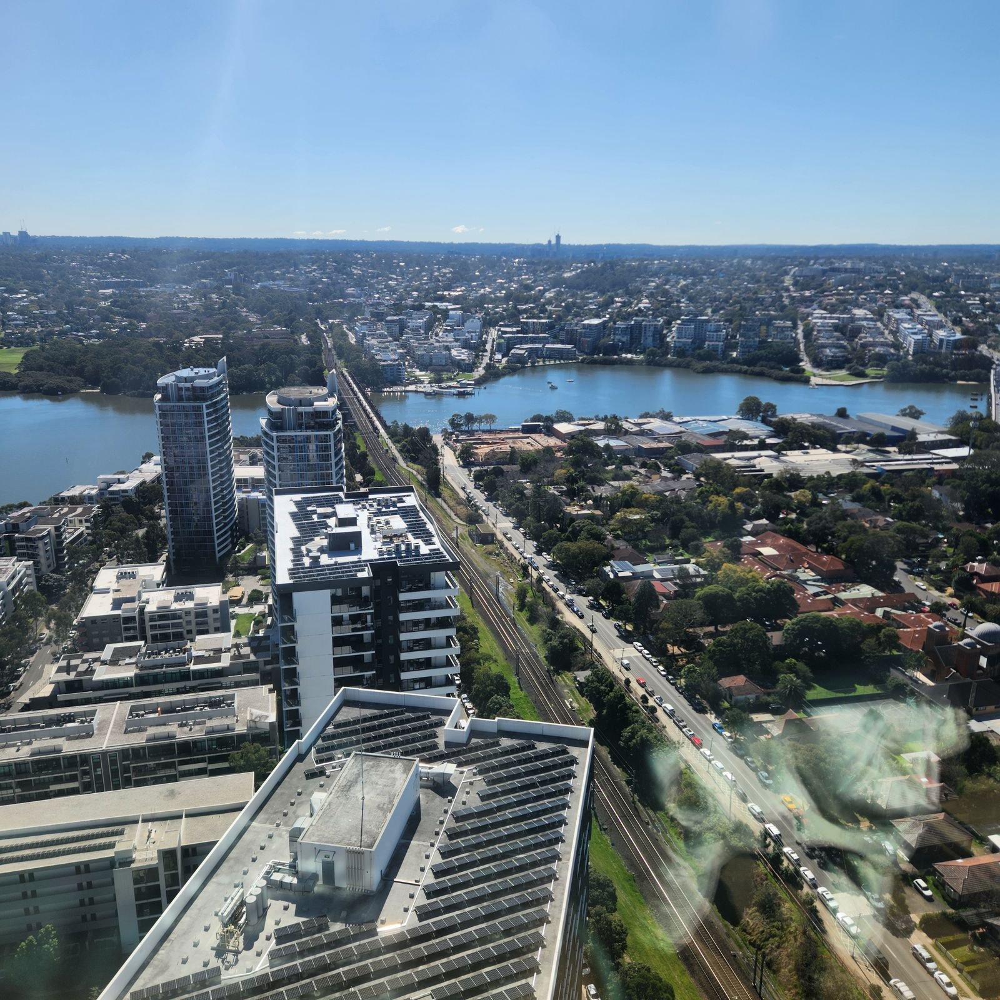
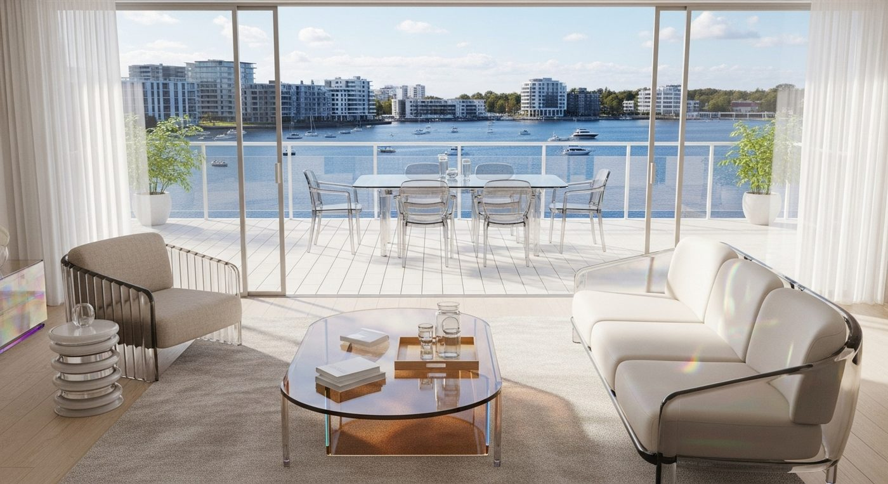
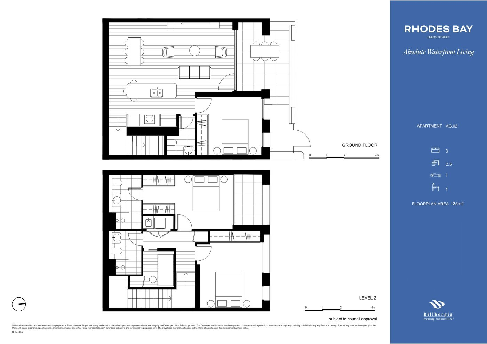

The first Rhodes development with direct access to Parramatta River. Six buildings rise from a foreshore park and promenade — embraced by water on three sides. 파라마타 강에 직접 면한 로즈 최초의 개발 프로젝트. 세 면이 물에 둘러싸인 강변 공원과 산책로 위로 6개 빌딩이 솟아오릅니다.Rhodes 半岛首个直面 Parramatta 河的开发项目。六栋楼宇矗立于三面环水的河畔公园与滨水步道之上。Rhodes 半島首個直面 Parramatta 河的開發項目。六棟樓宇矗立於三面環水的河畔公園與濱水步道之上。
Rhodes Peninsula is embraced by water on three sides — by Parramatta River, Brays Bay and Homebush Bay. In feng shui terms, a jade belt river: prosperity, harmony, exceptional fortune. 로즈 반도는 파라마타 강, 브레이스 베이, 홈부시 베이로 세 면이 물에 둘러싸여 있습니다. 풍수에서 옥띠 같은 강 — 번영, 조화, 그리고 빼어난 운세를 상징합니다.Rhodes 半岛三面为 Parramatta 河、Brays Bay 与 Homebush Bay 所环抱。风水中称之为玉带环腰之水 —— 象征富足、和谐与上佳运势。Rhodes 半島三面爲 Parramatta 河、Brays Bay 與 Homebush Bay 所環抱。風水中稱之爲玉帶環腰之水 —— 象徵富足、和諧與上佳運勢。
Rhodes Bay is the first new development in the peninsula's history to be built with direct access to Parramatta River — an absolute waterfront address.
로즈 베이는 반도 역사상 최초로 파라마타 강에 직접 면해 건설되는 신규 개발 프로젝트 — 절대 수변(Absolute Waterfront) 주소지입니다.
Rhodes Bay 是半岛历史上首个直面 Parramatta 河兴建的全新开发项目 —— 一个纯正水岸（Absolute Waterfront）的地址。
Rhodes Bay 是半島歷史上首個直面 Parramatta 河興建的全新開發項目 —— 一個純正水岸（Absolute Waterfront）的地址。
Designed for the modern Sydney-sider — investors, first homebuyers, young families and downsizers — these boutique apartments make the most of an irreplaceable waterfront location, just 12km west of Sydney's CBD. Six mixed-use residential buildings rise from a new foreshore park and promenade, with a future restaurant and retail precinct at ground level.
As part of the NSW Government's Rhodes East Place Plan, the surrounding precinct is being transformed with a new primary school, a waterfront dining precinct, and a ferry wharf — a convenient alternative connection to the city.
현대 시드니 주민을 위해 설계 — 투자자, 첫 주택 구매자, 젊은 가족, 다운사이저 — 이 부티크 아파트들은 시드니 CBD에서 서쪽으로 12km 거리의 대체 불가능한 수변 입지를 최대한 활용합니다. 6개의 복합용도 주거 빌딩이 새로운 강변 공원과 산책로 위로 솟아오르며, 지상층에는 향후 레스토랑과 리테일 권역이 들어섭니다.
专为当代悉尼居民而设 —— 投资者、首次置业者、年轻家庭与换小房人士 —— 这些精品公寓充分发挥其位于悉尼 CBD 以西 12 公里的不可复制水岸区位。六栋综合用途住宅楼宇矗立于全新河畔公园与滨水步道之上，地面层将引入餐饮与商业街区。
專爲當代悉尼居民而設 —— 投資者、首次置業者、年輕家庭與換小房人士 —— 這些精品公寓充分發揮其位於悉尼 CBD 以西 12 公里的不可複製水岸區位。六棟綜合用途住宅樓宇矗立於全新河畔公園與濱水步道之上，地面層將引入餐飲與商業街區。
NSW 정부의 Rhodes East Place Plan의 일환으로, 주변 권역은 새 초등학교, 수변 다이닝 권역, 그리고 시티로 향하는 편리한 대안 교통수단인 페리 선착장과 함께 변모하고 있습니다.
作为 NSW 政府 Rhodes East Place Plan 的一部分，周边区域正在焕新，将增设全新小学、滨水餐饮街区，以及通往市区的便捷替代通勤方式 —— 渡轮码头。
作爲 NSW 政府 Rhodes East Place Plan 的一部分，周邊區域正在煥新，將增設全新小學、濱水餐飲街區，以及通往市區的便捷替代通勤方式 —— 渡輪碼頭。

Six mixed-use residential buildings rise from 7 to 17 storeys, anchored by Buildings E and F — the only two absolute-waterfront blocks on the entire Rhodes peninsula. 7층에서 17층까지 6개의 복합용도 주거 빌딩이 솟아오르며, 로즈 반도 전체에서 유일한 두 개의 절대 수변 블록인 E·F 빌딩이 그 중심을 이룹니다.六栋综合用途住宅楼宇由 7 层递升至 17 层，其中 E、F 两栋为 Rhodes 半岛仅有的纯正水岸地块，构成项目核心。六棟綜合用途住宅樓宇由 7 層遞升至 17 層，其中 E、F 兩棟爲 Rhodes 半島僅有的純正水岸地塊，構成項目核心。
North-west facing tower with direct river views and wintergarden balconies. The signature waterfront block of the masterplan.
북서향 타워, 직접적인 강 조망과 윈터가든 발코니. 마스터플랜의 시그니처 수변 블록.
西北向塔楼，直面河景并配冬季花园阳台。总体规划中的标志性水岸地块。
西北向塔樓，直面河景並配冬季花園陽臺。總體規劃中的標誌性水岸地塊。
North-east facing tower with large balconies and dual-key configurations on select levels. Surrounded by foreshore park.
북동향 타워, 대형 발코니와 선택 층의 듀얼키 구성. 강변 공원에 둘러싸여 있습니다.
东北向塔楼，配大型阳台，部分楼层设双钥匙户型。四周环绕河畔公园。
東北向塔樓，配大型陽臺，部分樓層設雙鑰匙戶型。四周環繞河畔公園。
12-level east-facing tower with two-storey townhouse stock at ground level — a rare offering in the Rhodes precinct.
12층 동향 타워, 지상층에 2층 타운하우스 — 로즈 권역에서 보기 드문 구성.
12 层东向塔楼，地面层设双层联排别墅 —— 于 Rhodes 区域极为罕见。
12 層東向塔樓，地面層設雙層聯排別墅 —— 於 Rhodes 區域極爲罕見。
South-east facing block, capturing morning light across the masterplan from the precinct's southern edge.
남동향 블록, 단지 남쪽에서 마스터플랜 전체로 아침 빛을 받습니다.
东南向地块，位于小区南侧，晨光洒遍整个总体规划区。
東南向地塊，位於小區南側，晨光灑遍整個總體規劃區。
9-level west-facing block — typical 1-bed and 2-bed apartments with wintergarden balconies. Afternoon and sunset light.
9층 서향 블록 — 윈터가든 발코니를 갖춘 1베드·2베드 평면. 오후와 일몰 빛.
9 层西向地块 —— 配冬季花园阳台的 1 房与 2 房户型。享午后与日落光线。
9 層西向地塊 —— 配冬季花園陽臺的 1 房與 2 房戶型。享午後與日落光線。
7-level west-facing block with typical 2-bed apartments — wintergarden plus balcony combinations.
7층 서향 블록, 윈터가든 + 발코니 조합을 갖춘 2베드 평면.
7 层西向地块，2 房户型配冬季花园 + 阳台组合。
7 層西向地塊，2 房戶型配冬季花園 + 陽臺組合。
Walking distance to Rhodes Station on the T9 Northern Line — express services to the CBD, Strathfield interchange and the Macquarie tech precinct. A future ferry wharf will add a riverside alternative. T9 노던 라인 로즈역까지 도보 거리 — CBD, 스트라스필드 환승역, 매쿼리 테크 권역까지 급행. 향후 페리 선착장이 강변 대안 교통수단으로 추가됩니다.步行可达 T9 Northern Line 的 Rhodes 火车站 —— 快车直达 CBD、Strathfield 换乘站及 Macquarie 科技园区。未来渡轮码头将增添一条滨水替代通勤路线。步行可達 T9 Northern Line 的 Rhodes 火車站 —— 快車直達 CBD、Strathfield 換乘站及 Macquarie 科技園區。未來渡輪碼頭將增添一條濱水替代通勤路線。
The wider Rhodes precinct is being transformed under the NSW Place Strategy: up to 4,200 new homes, workspaces for over 1,100 new jobs, 23,000 sqm of public space — and a new primary school, waterfront dining precinct, and ferry wharf within walking distance of Rhodes Bay.
광역 로즈 권역은 NSW Place Strategy에 따라 변모하고 있습니다: 최대 4,200세대의 신규 주택, 1,100개 이상의 신규 일자리를 위한 업무 공간, 23,000㎡의 공공 공간 — 그리고 로즈 베이에서 도보 거리에 있는 새 초등학교, 수변 다이닝 권역, 페리 선착장.
大 Rhodes 区域正依据 NSW Place Strategy 焕新：最多 4,200 套新增住宅、可容纳 1,100 个以上新增职位的办公空间、23,000 平方米公共空间 —— 以及步行可达 Rhodes Bay 的全新小学、滨水餐饮街区与渡轮码头。
大 Rhodes 區域正依據 NSW Place Strategy 煥新：最多 4,200 套新增住宅、可容納 1,100 個以上新增職位的辦公空間、23,000 平方米公共空間 —— 以及步行可達 Rhodes Bay 的全新小學、濱水餐飲街區與渡輪碼頭。
Resident-only amenities curated around the waterfront — a foreshore park, rooftop gardens, putting greens and an indoor virtual golf room. A retail and dining precinct at ground level brings the village to your doorstep. 강변을 중심으로 큐레이션된 입주민 전용 편의시설 — 강변 공원, 옥상 정원, 퍼팅 그린, 실내 가상 골프룸. 지상층의 리테일·다이닝 권역이 마을을 현관 앞으로 가져옵니다.围绕水岸精心规划的住户专属配套 —— 河畔公园、屋顶花园、推杆果岭与室内模拟高尔夫室。地面层的商业与餐饮街区，将村落生活带到家门口。圍繞水岸精心規劃的住戶專屬配套 —— 河畔公園、屋頂花園、推杆果嶺與室內模擬高爾夫室。地面層的商業與餐飲街區，將村落生活帶到家門口。
Billbergia's $85M state-of-the-art wellness facility — gymnastics, café, coworking, health club, badminton. Opening alongside the Rhodes precinct revitalisation.
Billbergia의 $8,500만 최첨단 웰니스 시설 — 체조, 카페, 코워킹, 헬스클럽, 배드민턴. 로즈 권역 재생과 함께 오픈.
Billbergia 投资 8,500 万澳元打造的尖端康体设施 —— 涵盖体操、咖啡馆、共享办公、健身俱乐部与羽毛球。随 Rhodes 区域更新同步启用。
Billbergia 投資 8,500 萬澳元打造的尖端康體設施 —— 涵蓋體操、咖啡館、共享辦公、健身俱樂部與羽毛球。隨 Rhodes 區域更新同步啓用。
Boutique apartments designed for the modern Sydney-sider — every layout considered for orientation, light, and the rare privilege of a wintergarden over open water. 현대 시드니 주민을 위해 설계된 부티크 아파트 — 모든 평면이 방향, 빛, 그리고 열린 수면을 향한 윈터가든이라는 흔치 않은 특권을 고려해 만들어졌습니다.为当代悉尼居民而设的精品公寓 —— 每一个户型皆着眼于朝向、采光，以及面向开阔水面的冬季花园这一难得优势。爲當代悉尼居民而設的精品公寓 —— 每一個戶型皆着眼於朝向、採光，以及面向開闊水面的冬季花園這一難得優勢。
Wintergardens are the signature feature of Rhodes Bay — enclosed glazed balconies that extend living space year-round.
윈터가든은 로즈 베이의 시그니처 — 사계절 거실 공간을 확장하는 유리로 둘러싸인 발코니입니다.
冬季花园是 Rhodes Bay 的标志 —— 以玻璃围合的阳台，四季延展您的起居空间。
冬季花園是 Rhodes Bay 的標誌 —— 以玻璃圍合的陽臺，四季延展您的起居空間。
Stage 1 brings Buildings C, D and E to market with 1-bedroom, 2-bedroom and 3-bedroom configurations. Stage 2 follows with Buildings A and F — the latter featuring large balconies on the river side, plus rare dual-key 3-bedroom layouts and the 4-bedroom premium stock.
Across the masterplan, seven 2-storey townhouses sit at the ground level of Buildings A and D — among the rarest stock in the entire Rhodes peninsula.
1단계에서는 C, D, E 빌딩이 1베드·2베드·3베드 평면으로 출시됩니다. 2단계는 A, F 빌딩이 이어지며, F 빌딩은 강쪽 대형 발코니와 함께 희귀한 듀얼키 3베드 평면, 그리고 4베드 프리미엄 평면을 갖습니다.
第一期推出 C、D、E 栋，涵盖 1 房、2 房与 3 房户型。第二期为 A、F 栋，其中 F 栋设有配朝河大阳台的稀有双钥匙3 房户型，以及 4 房尊享户型。
第一期推出 C、D、E 棟，涵蓋 1 房、2 房與 3 房戶型。第二期爲 A、F 棟，其中 F 棟設有配朝河大陽臺的稀有雙鑰匙3 房戶型，以及 4 房尊享戶型。
마스터플랜 전체에서, 2층 타운하우스 7세대가 A·D 빌딩 지상층에 자리합니다 — 로즈 반도 전체에서 가장 희귀한 평면 중 하나입니다.
在整个总体规划中，7 套双层联排别墅坐落于 A、D 栋地面层 —— 属 Rhodes 半岛最为稀有的户型之一。
在整個總體規劃中，7 套雙層聯排別墅坐落於 A、D 棟地面層 —— 屬 Rhodes 半島最爲稀有的戶型之一。
Choose between two distinct finish schedules — Amber for warmth and depth, Pearl for light and openness. Both designed to feel timeless against the waterfront backdrop. 두 가지 차별화된 마감 옵션 — 따스함과 깊이의 Amber, 빛과 개방감의 Pearl. 두 스킴 모두 수변 배경 앞에서 시대를 초월한 느낌을 줍니다.两款风格分明的饰面可选 —— 温润深沉的 Amber，通透明亮的 Pearl。两款方案在水岸背景下皆显隽永。兩款風格分明的飾面可選 —— 溫潤深沉的 Amber，通透明亮的 Pearl。兩款方案在水岸背景下皆顯雋永。

Rich warm tones with timber finishes and bronze accents — a deep, grounded interior expression for sunset-facing aspects.
목재 마감과 브론즈 액센트의 풍부한 따스한 톤 — 일몰 향 평면을 위한 깊고 안정된 인테리어 표현.
木质饰面与青铜点缀交织的浓郁暖调 —— 为朝向日落的户型带来深邃沉稳的室内表达。
木質飾面與青銅點綴交織的濃郁暖調 —— 爲朝向日落的戶型帶來深邃沉穩的室內表達。
Soft luminous tones with light timbers and warm whites — opening up the wintergarden and amplifying the river light.
밝은 목재와 따스한 화이트의 부드럽고 빛나는 톤 — 윈터가든을 열어주고 강의 빛을 증폭시킵니다.
浅色木材与暖白交织的柔和通透色调 —— 让冬季花园更显开阔，并放大河面的光线。
淺色木材與暖白交織的柔和通透色調 —— 讓冬季花園更顯開闊，並放大河面的光線。
Both schemes include integrated kitchen appliances · stone benchtops · timber-look hybrid flooring · designer tapware 두 스킴 모두 빌트인 키친 가전 · 스톤 벤치탑 · 목재 룩 하이브리드 플로어링 · 디자이너 수도꼭지 포함两款方案均含嵌入式厨房家电 · 石材台面 · 木纹复合地板 · 设计师龙头兩款方案均含嵌入式廚房家電 · 石材檯面 · 木紋複合地板 · 設計師龍頭
Stage 1 brings the inner blocks (C, D, E) to market first. Stage 2 follows with Buildings A and F — including the absolute-waterfront F tower and rare townhouse stock. 1단계는 내측 블록(C, D, E)을 먼저 시장에 선보입니다. 2단계는 절대 수변 F 타워와 희귀한 타운하우스를 포함한 A·F 빌딩이 이어집니다.第一期率先推出内侧地块（C、D、E 栋）。第二期为 A、F 栋，含纯正水岸的 F 座塔楼及稀有的联排别墅。第一期率先推出內側地塊（C、D、E 棟）。第二期爲 A、F 棟，含純正水岸的 F 座塔樓及稀有的聯排別墅。
A rare offering across Buildings A and D — among the only townhouse stock in the entire Rhodes peninsula. Three-bedroom configurations with private entries, approx. 135 sqm.
A·D 빌딩에 걸친 희귀한 평면 — 로즈 반도 전체에서 거의 유일한 타운하우스 평면. 약 135㎡, 3베드룸 + 전용 입구.
横跨 A、D 栋的稀有户型 —— 于 Rhodes 半岛近乎独一无二。约 135 平方米，3 房并设专属入户。
橫跨 A、D 棟的稀有戶型 —— 於 Rhodes 半島近乎獨一無二。約 135 平方米，3 房並設專屬入戶。

Billbergia has been a major contributor to the Rhodes precinct for more than 20 years — delivering parks, open space, Rhodes Central Shopping Centre, and the new $85M sports and recreation centre. Billbergia는 20년 이상 로즈 권역의 주요 기여자 — 공원, 오픈 스페이스, 로즈 센트럴 쇼핑 센터, 그리고 새 $8,500만 스포츠·레크리에이션 센터를 건설.Billbergia 深耕 Rhodes 区域逾二十年，是区内主要贡献者 —— 建设了公园、开放空间、Rhodes Central 购物中心，以及全新的 8,500 万澳元体育康体中心。Billbergia 深耕 Rhodes 區域逾二十年，是區內主要貢獻者 —— 建設了公園、開放空間、Rhodes Central 購物中心，以及全新的 8,500 萬澳元體育康體中心。
Billbergia is proud to have been awarded a 4.5-Gold Star iCIRT rating from independent verifier Equifax, and an industry-best rating for 'Conduct' — demonstrating integrity in business.
Billbergia는 독립 검증 기관 Equifax로부터 4.5★ Gold iCIRT 등급을 받았으며, 업계 최고의 'Conduct' 등급을 받아 비즈니스의 진정성을 입증했습니다.
Billbergia 获独立评估机构 Equifax 授予 4.5★ Gold iCIRT 评级，并取得业内最高的「Conduct（行为操守）」评级，印证其经营诚信。
Billbergia 獲獨立評估機構 Equifax 授予 4.5★ Gold iCIRT 評級，並取得業內最高的「Conduct（行爲操守）」評級，印證其經營誠信。
More than a developer, Billbergia is a community builder — having shaped the modern Rhodes peninsula through multiple successful projects. Beyond residential apartments, they have delivered the award-winning Rhodes Central Shopping Centre, key parks and foreshore connections, and infrastructure that benefits the entire precinct.
All projects are delivered by in-house development and construction teams, ensuring quality control from concept to completion. Billbergia continues to invest in sustainable design and energy-efficient apartment specifications.
Billbergia는 단순한 시행사가 아닌 커뮤니티 빌더 — 여러 성공적인 프로젝트를 통해 현대 로즈 반도를 빚어냈습니다. 주거 아파트뿐만 아니라, 수상 경력에 빛나는 로즈 센트럴 쇼핑 센터, 주요 공원·강변 연결, 그리고 권역 전체에 혜택을 주는 인프라를 제공했습니다.
Billbergia 不只是开发商，更是社区营造者 —— 以多个成功项目塑造了今日的 Rhodes 半岛。除住宅公寓外，更交付了屡获殊荣的 Rhodes Central 购物中心、主要公园与滨水连接，以及惠及整个区域的基础设施。
Billbergia 不只是開發商，更是社區營造者 —— 以多個成功項目塑造了今日的 Rhodes 半島。除住宅公寓外，更交付了屢獲殊榮的 Rhodes Central 購物中心、主要公園與濱水連接，以及惠及整個區域的基礎設施。
모든 프로젝트는 자체 개발 및 시공 팀에 의해 진행되어, 컨셉부터 완공까지 품질 관리를 보장합니다. Billbergia는 지속가능한 설계와 에너지 효율적인 아파트 사양에 지속적으로 투자하고 있습니다.
所有项目均由自有开发与施工团队执行，确保从概念到竣工的品质把控。Billbergia 持续投入可持续设计与节能公寓规格。
所有項目均由自有開發與施工團隊執行，確保從概念到竣工的品質把控。Billbergia 持續投入可持續設計與節能公寓規格。
Individual apartment availability, current incentives, floorplans by typology and aspect-specific information are provided privately on enquiry. Get in touch for the complete information package and current Stage 1 release stock. 개별 세대 분양 가능 여부, 현재 적용 인센티브, 평면별 도면, 향(aspect)별 상세 정보는 문의 시 개별적으로 제공됩니다. 전체 자료 패키지와 현재 1단계 분양 재고를 받으시려면 연락 주세요.具体房源可售情况、当前适用礼遇、各户型图纸及朝向详情，均于咨询时单独提供。如需完整资料包及第一期当前房源清单，欢迎与我联系。具體房源可售情況、當前適用禮遇、各戶型圖紙及朝向詳情，均於諮詢時單獨提供。如需完整資料包及第一期當前房源清單，歡迎與我聯繫。